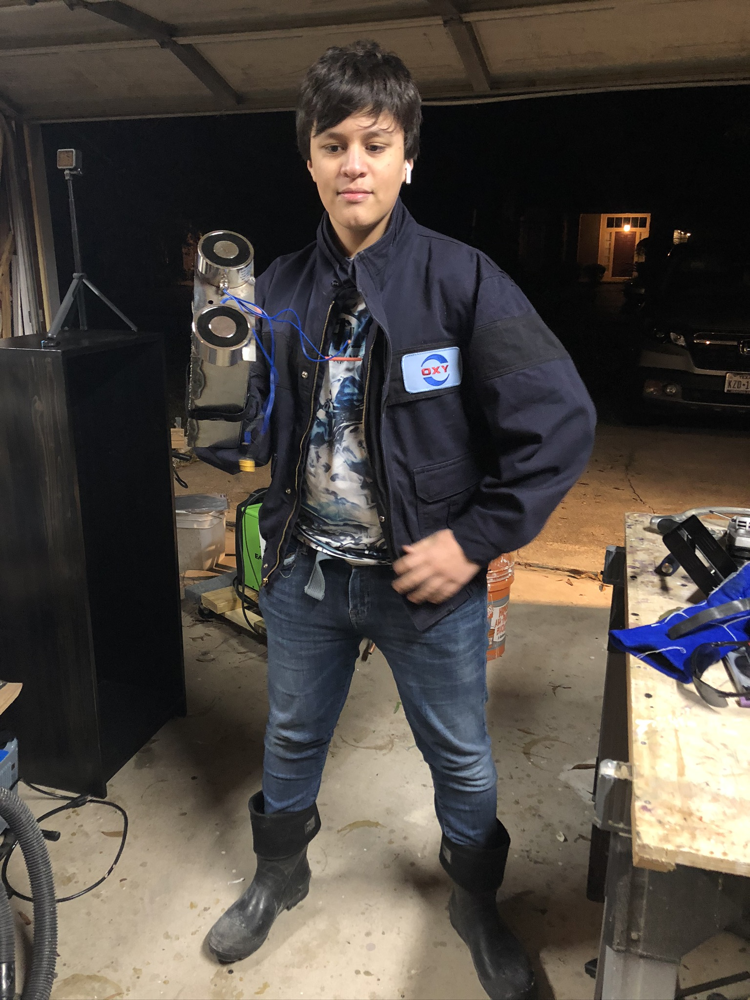

Finished wearable electromagnetic arm during testing.
Click any thumbnail to view it larger.
Project Overview
An early wearable electromechanical build.
I built this project around two large electromagnets mounted to a wearable metal frame. The structure was fabricated from metal and designed to slide over my arm, with the electrical system and battery packaged directly onto the assembly.
The project was an early exercise in combining mechanical fabrication with electrical components in a compact wearable form. It also gave me hands-on experience with welding, wiring, mounting heavy components, and iterating around practical packaging constraints.
What I worked on
- Fabricated and welded the wearable metal structure.
- Mounted and wired two electromagnets into the frame.
- Integrated battery power and electrical connections into the wearable assembly.
- Tested the completed mechanism and documented the working prototype.
Testing